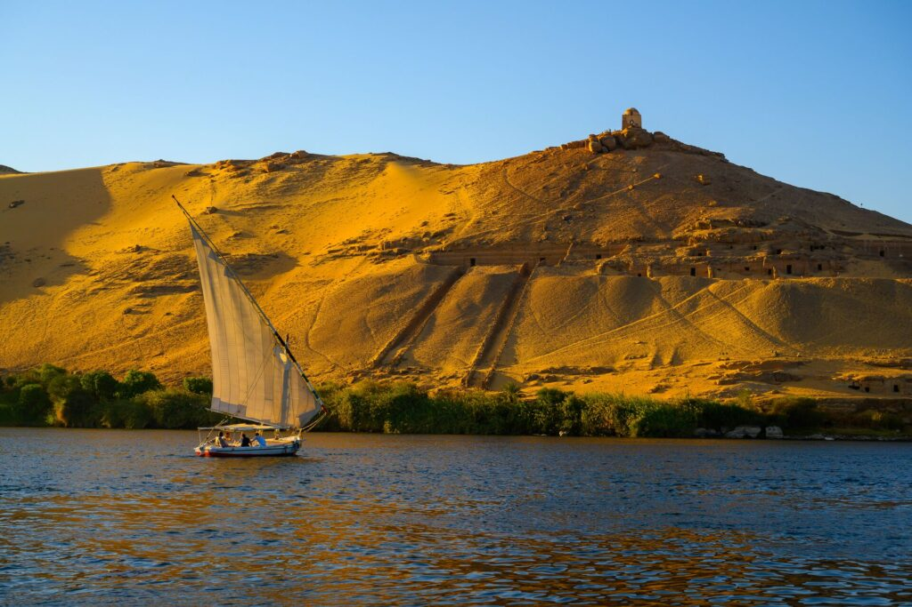

Pyramids
The pyramids of ancient Egypt are some of the most magnificent and iconic structures in history, built primarily as elaborate tombs for the pharaohs and their consorts during the Old and Middle Kingdom periods, with the peak of construction occurring around 4,500 years ago.

Nile River
The Nile River is the longest river in Africa and historically vital to civilizations like ancient Egypt, providing water, fertile soil, and a transportation route. It flows northward through 11 countries before emptying into the Mediterranean Sea and is fed by two main tributaries, the White Nile and the Blue Nile, which join in Khartoum, Sudan. Ancient Egyptians used the river's annual floods to enrich their lands, and it played a central role in their economy, culture, and religious beliefs.

Abu Simbel Temple
The Abu Simbel Temples are two massive rock-cut monuments located on the western bank of Lake Nasser in Nubia, southern Egypt. Carved out of a sandstone cliff during the 13th century BC under King Ramesses II, they serve as a grand monument to his reign, his historic battle of Kadesh, and his beloved wife, Queen Nefertari.

Grand Egyptian Museum
The Grand Egyptian Museum (GEM) is the world’s largest archaeological museum dedicated to a single civilization. Located on the Giza Plateau right next to the Great Pyramids, this architectural marvel spans nearly 500,000 square meters. It houses an extraordinary collection of over 100,000 ancient artifacts, bridging thousands of years of Egyptian history. Following its highly anticipated full public opening, the museum showcases the complete, undivided collection of King Tutankhamun’s treasures for the very first time since their discovery in 1922. Its state-of-the-art, climate-controlled galleries and massive translucent stone facade seamlessly blend cutting-edge 21st-century technology with the monumental scale of antiquity.
.png)